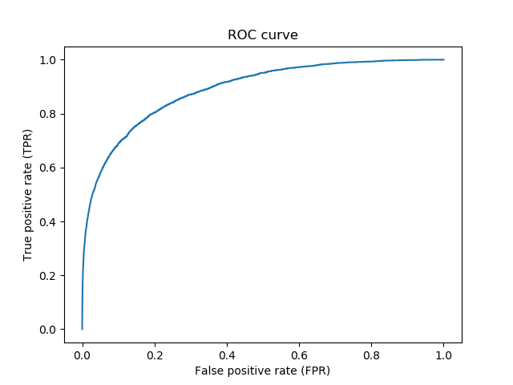
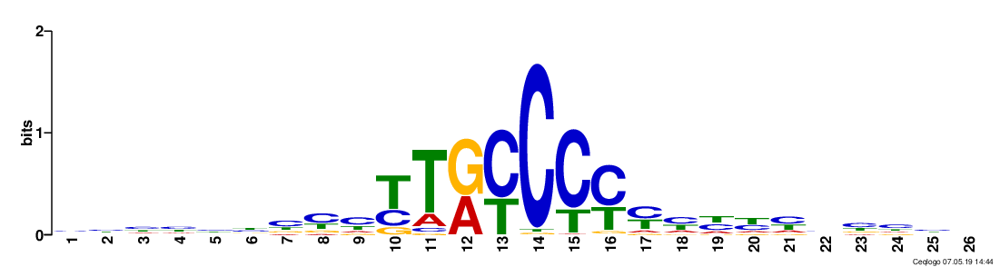

DanQ is a hybrid convolutional and bi-directional long short-term
memory recurrent neural network framework for predicting
non-coding function de novo from sequence.
This application is being used as a biological example in class #2 of the course
"Deep Learning by Example on Biowulf".
Allocate an interactive session and run the program. Sample session:
[user@biowulf]$ sinteractive --mem=96g --gres=gpu:v100x,lscratch:10 --cpus-per-task=14 [user@cn4466 ~]$module load DanQ [+] Loading cuDNN/8.0.3/CUDA-11.0 libraries... [+] Loading CUDA Toolkit 11.0.3 .... [+] Unloading meme 5.1.0 on cn2358 [+] Loading openmpi 2.1.1 for GCC 4.8.5 [+] Loading weblogo 3.6 [+] Loading DanQ 20210407 ...(a lower-case name, danq, for the module will also work).
[user@cn4466 ~]$ train.py -h
usage: train.py [-h] [-b batch_size] -d data_folder [-e num_epochs] [-f start_filters] [-g num_gpus]
[-k kernel_size] [-l learning_rate] [-m model_name] [-M] [-n debug_size]
[-o test_results] [-O optimizer] [-s] [-v] [-w]
optional arguments:
-h, --help show this help message and exit
-b batch_size, --bs batch_size
batch size; default=500
-e num_epochs, --num_epochs num_epochs
number of epochs; default=60
-f start_filters, --start_filters start_filters
number of filters used in the (1st) convolution layer; default=320
-g num_gpus, --num_gpus num_gpus
number of gpus to use; default=1
-k kernel_size, --kernel_size kernel_size
conv. kernel size; default=26 for DanQ and =8 for DeepSEA model
-l learning_rate, --lr learning_rate
learning rate; default=1.e-4
-m model_name, --model_name model_name
model name: DanQ | DeepSEA
-M, --motif_sequences
predict motif sequences, rather than target labels
-n debug_size, --num_debug_data debug_size
number of training examples to use when debugging
-o test_results, --output test_results
output file with test results; default='test_results.h5'
-O optimizer, --optimizer optimizer
optimizer: adam | rmsprop | sgd
-s, --schedule vary the learning rate according to a schedule
-v, --verbose increase the verbosity level of output
-w, --load_weights read weights from a checkpoint file
required arguments:
-d data_folder, --data_folder data_folder
path to the data folder
This code comprises two network models: DanQ and DeepSEA. In order to perform training any model, first download available sample data:
[user@cn4466 ~]$ cp -r $DANQ_DATA/* .This command will copy to your current directory
[user@cn4466 ~]$ train.py -d data ... Epoch 1/60 4400000/4400000 [==============================] - 3248s 738us/step - loss: 0.0759 - val_loss: 0.0629 Epoch 2/60 4400000/4400000 [==============================] - 3312s 753us/step - loss: 0.0677 - val_loss: 0.0574 Epoch 3/60 4400000/4400000 [==============================] - 3253s 739us/step - loss: 0.0652 - val_loss: 0.0560 Epoch 4/60 4400000/4400000 [==============================] - 3142s 714us/step - loss: 0.0635 - val_loss: 0.0547 Epoch 5/60 4400000/4400000 [==============================] - 3134s 712us/step - loss: 0.0624 - val_loss: 0.0542 Epoch 6/60 4400000/4400000 [==============================] - 3136s 713us/step - loss: 0.0616 - val_loss: 0.0545 ...The training will take approx. 50 min per one epoch when one GPU V100 is used. The result of the training (i.e. a checkpoint file) will be stored in the folder "checkpoints", in HDF5 format. The name of the checkpoint file will be
checkpoints/<.out_prefix>.<model_name>.h5.or, in this particular case, danq.DanQ.h5.
[user@cn4466 ~]$ train.py -d data -m DeepSEA ...The command line options for the prediction code are:
[user@cn4466 ~]$ predict.py -h
...
usage: predict.py [-h] -d data_folder [-f start_filters] [-k kernel_size] [-m model_name] [-M]
[-o test_results]
optional arguments:
-h, --help show this help message and exit
-f start_filters, --start_filters start_filters
number of filters used in the (1st) convolution layer; default=320
-k kernel_size, --kernel_size kernel_size
conv. kernel size; default=26 for DanQ and =8 for DeepSEA model
-m model_name, --model_name model_name
model name: DanQ | DeepSEA
-M, --motif_sequences
predict motif sequences, rather than target labels
-o test_results, --output test_results
output file with test results; default='test_results.h5'
required arguments:
-d data_folder, --data_folder data_folder
path to the data folderUsing TensorFlow backend.
To make predictions of the target labels with model DanQ on the testing data stored in the MAT file data/test.mat and using a pre-trained checkpoint file, type
[user@cn4466 ~]$ predict.py -d data ... 455024/455024 [==============================] - 982s 2ms/stepWith this command, the predict.py code will output the predicted results in the file test_results.h5.
[user@cn4466 ~]$ visualize.py -h
Using TensorFlow backend.
usage: visualize.py [-h] [-f start_filters] [-M] -t target_id
optional arguments:
-h, --help show this help message and exit
-f start_filters, --start_filters start_filters
number of filters used in the (1st) convolution layer;
default=320
-M, --motif_sequence visualize a motif sequence, rather than a ROC curve
required arguments:
-t target_id, --target target_id
integer in the interval [1,919] for visualizing a ROC
curve and in [1,start_filters] for visualizing a motif sequence
together with the option -t to specify a particular target. For example:
[user@cn4466 ~]$ visualize.py -t 1
[user@cn4466 ~]$ predict.py -M -d dataThis command will produce a file motifs.txt. Then vusualize a particular motif by providing its id with -t option. For example:
[user@cn4466 ~]$ visualize.py -M -t 43
[user@cn4471 ~]$ exit [user@biowulf ~] sinteractive --mem=64g --gres=gpu:v100:4,lscratch:100 --cpus-per-task=14 [user@cn4471 ~]$ module load danq [user@cn4471 ~]$ cp -r $DANQ_DATA/* . [user@cn4471 ~]$ train.py -d data -g 4 -b 2000End the interactive session:
[user@cn4466 ~]$ exit salloc.exe: Relinquishing job allocation 46116226 [user@biowulf ~]$
Create a batch input file (e.g. danq.sh). For example:
#!/bin/bash module load DanQ cp -r $DANQ_DATA . train.py
Submit this job using the Slurm sbatch command.
sbatch [--cpus-per-task=#] [--mem=#] danq.sh